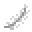

ウェポンの紹介
通常ウェポン
 エアライド ❝Airride❞
エアライド ❝Airride❞
ブーストとともに空中へ飛ぶ
スニークの使用で爆破を起こして浮き続ける
効果が切れるとそのまま落下する
シールド : 一度きり
クールダウン : 10秒
効果継続時間 : 4秒
バステト ❝Bastet❞
一時的に猫の神気をまとうことで超速を手に入れる
特有のパーティクルを纏うのでバレやすい
左クリックで一度だけ超加速できる
シールド : 一度きり
クールダウン : 9秒
効果継続時間 : 6秒
 ドーピング ❝Doping❞
ドーピング ❝Doping❞
禁忌行為、ドーピングをする
一時的に速度と跳躍力が上昇する
Hazeの効果を受けない
上空にいるときに左クリックで、視点先に微妙なブーストが可能
シールド : 一度きり
クールダウン : 10秒
効果継続時間 : 7秒
 ヘイズ ❝Haze❞
ヘイズ ❝Haze❞
視界妨害をするエレメントを投げる
内側からは完全に視界が妨害される
効果を受けると、ウェポンの使用ができなくなる
およそ5秒間このヘイズ状態が続く
シールド : 一度きり
クールダウン : 15秒
効果継続時間 : 10秒
 リーパー ❝Leaper❞
リーパー ❝Leaper❞
爆発的な跳躍を発動させる
常設してあるトランポリンでのジャンプ力を容易に超える
シールド : 一度きり
クールダウン : 10秒
 パラレル ❝Parallel❞
パラレル ❝Parallel❞
立ち位置を記憶し、過去の記憶と入れ替えをする
その際に過去の記憶先にテレポートさせる
使用すると全プレイヤーに密告サウンドが再生される
シールド : 一度きり
クールダウン : 16秒
 シールド ❝Shield❞
シールド ❝Shield❞
弓矢を一度だけ受けれるようにするシールドを張る
キルすることで張れるシールドが増加していく
なお、重複させてシールドはつけられない
金ブロックの上で使い、10秒間留まることで一度だけシールドを獲得できる
シールド : 1 + キル数 + 最大獲得数 1
クールダウン : 最大12秒
 ショックウェイバー ❝ShockWaver❞
ショックウェイバー ❝ShockWaver❞
爆風を作るエレメントを投げる
近づいたエンティティに強力なノックバックをくらわせる
自分もノックバックは、くらうので注意
シールド : 一度きり
クールダウン : 12秒
効果継続時間 : 10秒
 スワッパー ❝Swapper❞
スワッパー ❝Swapper❞
自分と視線先の敵との位置を交換する
自分は交換相手の向いている方向を向きながら交換され、相手は視点がランダムに搔きまわされる
シールド : 一度きり
クールダウン : 13秒
 ヴァニッシャー ❝Vanisher❞
ヴァニッシャー ❝Vanisher❞
一定時間透明になることができる
これこそ逃げと奇襲に徹した代物
なお透明になれるが、当たり判定は存在する
透明化の際に、全プレイヤーに向けて、警告サインが送信される
シールド : 一度きり
クールダウン : 13秒
効果継続時間 : 6秒
サプライアブルウェポン
 バトルアックス ❝BattleAxe❞
バトルアックス ❝BattleAxe❞
近接最強のウェポン
打撃での攻撃が可能になる
攻撃クールダウン : 1秒
 ビーム ❝Beam❞
ビーム ❝Beam❞
射撃最強のウェポン
直線軌道に超速の矢を5つ放てる
2tick置き(0.1s)に発射するため、微妙な方向調整も可能
クールダウン : 20秒
 グラヴィティ ❝Gravity❞
グラヴィティ ❝Gravity❞
特殊最強のウェポン
プレイヤーの重力を増強する
浮遊しているプレイヤーを落下させる
全プレイヤーに7秒間、めまいを付与
全プレイヤーに4秒間、鈍足を付与
クールダウン : 14秒
 ニンジャ ❝Ninja❞
ニンジャ ❝Ninja❞
移動最強のウェポン
忍者の能力を得ることで、壁走りと水上歩行が可能になる。
バステトと同様の速度が付与される。
クールダウン : 25秒
効果継続時間 : 10秒